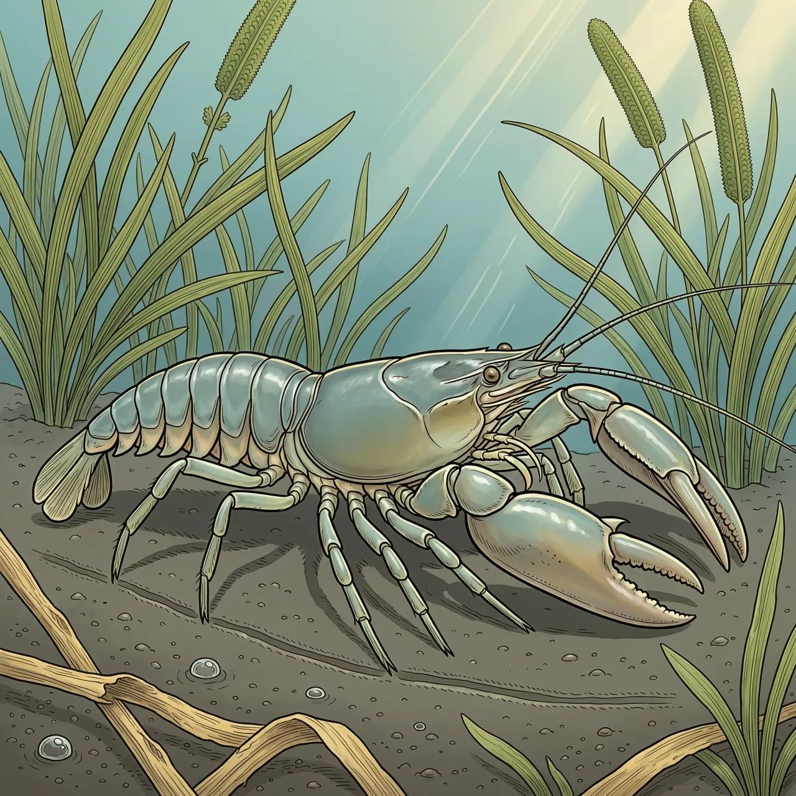
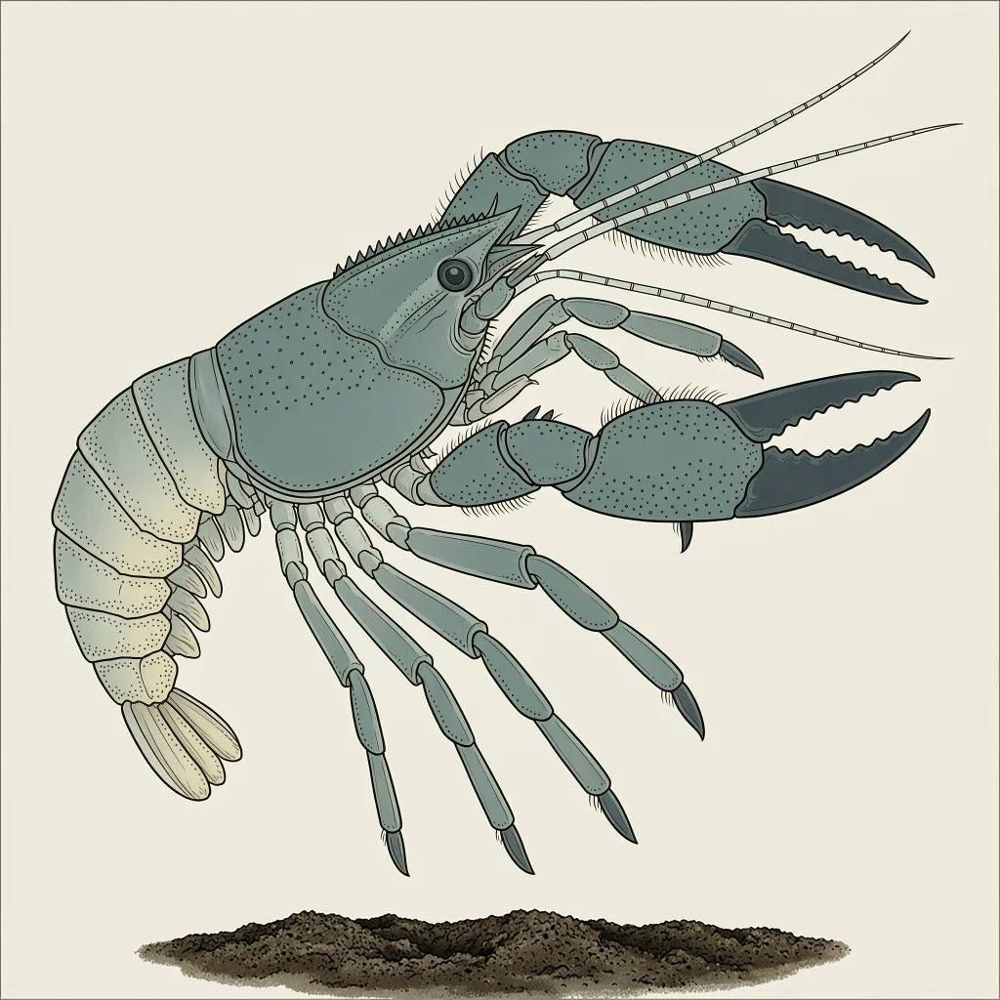

日本沼虾俗称青虾，长臂虾科沼虾属的淡水虾，体长一般50～90毫米，广布亚洲东部。它栖于水草繁茂的沿湖泥底，昼伏夜出，吃水草、有机碎屑和动物尸体；随水温在浅水与深水间往返，冬季潜伏湖底越冬。成熟雄虾的第二对螯足显著粗长。
长江中下游一处流缓的沿湖港湾，水肥、草密，拨开水草，常能撞见一只青灰色的小虾贴着泥底爬行。这是日本沼虾，也叫青虾，体长一般50～90毫米，亚洲东部到处有它。它常出现的地方有共性：水流慢，水草密，底是泥。水草做掩蔽，泥里积着有机碎屑和动物尸体，是它夜里翻检的食物。
日本沼虾的活动被水温牵着走。昼夜是一套：白天伏在水草和泥底不动，夜里才出来觅食。季节是另一套：开春水温上升，日本沼虾移到沿岸浅水区；盛夏水温进一步升高，又退回深水；入冬后潜伏在湖底或水草丛中越冬，在深水处成批聚集。一片湖湾的水温变化，就足够安排它全年的位置。
反常识的是体型与地位的不匹配：日本沼虾最大的不过90毫米，在中国淡水虾里却是适应性最强、分布最广、产量最高、经济价值最大的一种，长江中下游普遍进行人工育苗、养殖。另一个看点长在钳子上：成熟雄虾的第二螯足显著粗长，远胜其余步足。起网的时候，一堆青灰色里螯足垂在身前拖得老长的，多半就是雄虾。
